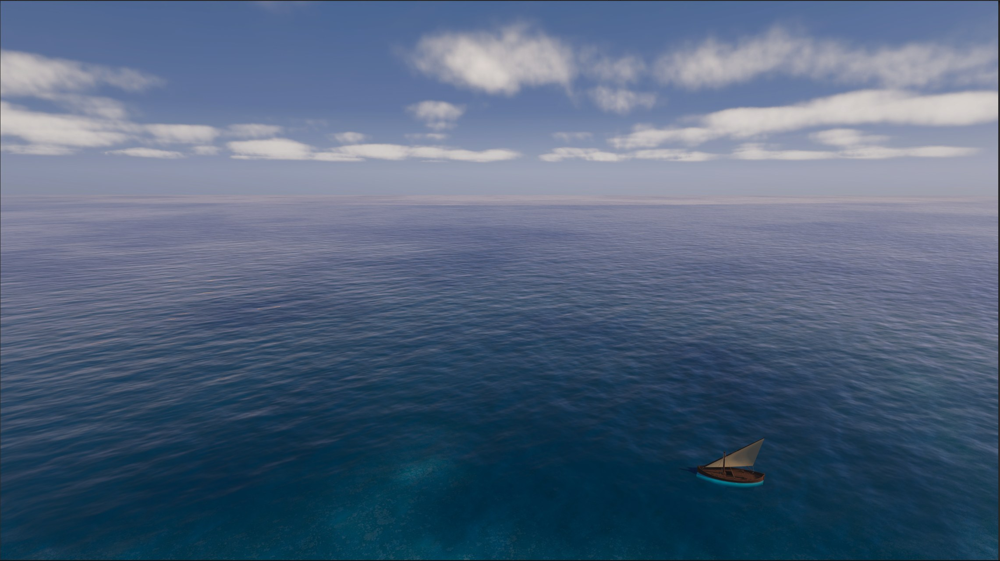

Playtests, polish, and asking for advice

A bit of everything
Last time I said the next step is playtesting, then making the game feel better and polishing it. That's pretty much exactly what happened, so this one is a bit of everything.
Playing it, a lot
I recorded myself playing the whole two-island game, start to finish. Then I went through the recording and marked every stretch where I was just waiting with nothing to build. There were a lot more of those than I thought. So I did a pacing pass on the economy, and on my next run it felt okay.
Then Barni came over to play. He plays and loves Anno, so I was nervous! I gave him a few tips but mostly let him figure it out. And he finished it: all the way from the first woodcutter to bringing iron ore home from the mining island.
He also found all the places where the game tricks you. He tried to escape from building mode with right click. He deleted buildings by accident because the demolish button doesn't ask first. He wanted to move a building he placed in the wrong spot, and you can't do that yet. And his mining island starved. Three times. The notifications told him, he just didn't see them. Those are all on my list now.
Telling you what to do next
Before these playtests I added two things a new player really needs.
Goals: a short chain of them is always on screen, from building your first woodcutter to bringing iron ore home. You always know what you're working towards.
Notifications: when people go hungry, starve or die, it shows up in a log, and one click takes you there, on any island. Barni proved it's not loud enough yet, but the base is in. The game also saves when you quit now. Small thing, but losing an hour of building is not fun.

Making it look like the Adriatic
Then came the part I enjoyed the most: making all the big pieces of the picture fit together.
Vegetation felt like the weakest part, and it carries most of the first impression, so I spent a lot of time on trees. They have a new shader now, so they sway in the wind and catch the light, and I rebuilt the oak crowns in Blender so they read well from high above. The other species got the same treatment. The palms are gone for now: they're not really native, and they gave the wrong impression.
I also gathered a lot of Adriatic reference photos and made new terrain textures from them. The buildings got a weathered look, because they were way too clean and fake. There are cloud shadows drifting over the islands and the sea, foam where the waves hit the shore, and the light is warmer, which is a lot easier on the eyes in a long session.


It's not silent anymore
Until now the game had no sound at all. Now there's a first pass: building, placing and clicking all make a sound, and you hear the sea, the towns and the harbours depending on where the camera is. It's far from final, but it changes how it feels more than I expected.
Asking for advice
Here's the new part. For a long time I've been heads down building. Now I'm starting to reach out.
I reached out to another indie developer making a city builder, and I'm looking for a few more, to maybe start a small group where we show each other our progress every week. I'm reading up on marketing, because I honestly don't know much about it yet. And I'm writing to a few publishers. Not to pitch, just to ask how they see a game like this at this stage, and what they'd want to see.
The game also has its own website now: Second Sailing.
What's next
Going public. I want to get the game out in the open and start gathering wishlists, while I keep polishing the visuals alongside. The polishing is also what I'll be showing, so the two go together.
And I'll fix what Barni found, before the next round of playtests.
Thanks for reading!
If you want to see how it plays out, sign up for the next devlog by email.
Comments